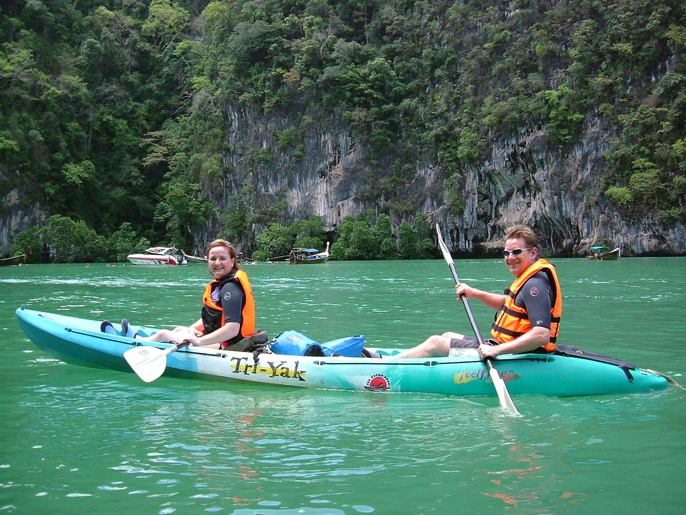

La ruta, de un vistazo
22 noches con solo 3 vuelos internos y sin retrocesos: se entra al norte por Chiang Rai y se baja por carretera hasta Chiang Mai, así el trayecto se convierte en parte del viaje. En el sur, mar de Andamán: en noviembre empieza allí la temporada seca (el golfo de Samui, en cambio, está en su época más lluviosa — por eso lo evitamos).
- Bangkok
jue 29 oct → dom 1 nov · 3 noches — templos, río y comida callejera - Vuelo Bangkok → Chiang Rai (1 h 20)
- Chiang Rai
dom 1 → mar 3 nov · 2 noches — Templo Blanco, Templo Azul, plantaciones de té - Coche con conductor Chiang Rai → Chiang Dao (3 h por la montaña)
- Chiang Dao
mar 3 → jue 5 nov · 2 noches — montaña sagrada, silencio y naturaleza - Coche Chiang Dao → Chiang Mai (1 h 30)
- Chiang Mai
jue 5 → lun 9 nov · 4 noches — casco antiguo, santuario de elefantes, mercados - Vuelo directo Chiang Mai → Krabi (2 h, AirAsia)
- Krabi town
lun 9 → mar 10 nov · 1 noche — parada técnica con encanto - Koh Yao Noi
mar 10 → vie 13 nov · 3 noches — la isla tranquila de la bahía de Phang Nga - Koh Lanta
vie 13 → mié 18 nov · 5 noches — playas largas, Old Town y excursión a Koh Rok - Vuelo Krabi → Bangkok (1 h 20)
- Bangkok
mié 18 → vie 20 nov · 2 noches — despedida, compras y último masaje
Bangkok — llegar y aterrizar despacio
Jueves 29 oct → domingo 1 nov
Bangkok abruma si se intenta abarcar. La clave: dormir cerca del río (zona Riverside / barrio antiguo), moverse en barco público por el Chao Phraya y hacer una sola visita grande al día. El resto del tiempo, callejear, comer y dejarse llevar.
Día 1 · Llegada jueves 29 oct
Llegada, traslado al hotel y nada más: un paseo corto por el barrio para estirar las piernas, primera cena de comida callejera y a dormir pronto para ajustar el jet lag.
Día 2 · Los imprescindibles del río viernes 30 oct
Mañana: Gran Palacio y Wat Phra Kaew a primera hora, y a 10 minutos a pie, el Buda reclinado de Wat Pho (y un masaje en su escuela, la más antigua de Tailandia). Tarde: siesta y al caer el sol, cruzar en ferry (5 THB) a Wat Arun, precioso al atardecer. Noche: cena en Yaowarat (Chinatown), el mejor street food de la ciudad.
Día 3 · La Bangkok que no corre sábado 31 oct
Mañana: al ser sábado, mercado de Chatuchak (id pronto, a las 9); si no os apetece mercado gigante, alternativa: paseo en barca longtail por los canales de Thonburi, la Bangkok de casas sobre el agua. Tarde: barrio de Talat Noi — callejones con arte urbano, talleres y cafés junto al río. Noche: una copa tranquila en un rooftop con vistas al Chao Phraya.
Día 4 · Rumbo al norte domingo 1 nov
Mañana relajada y vuelo a Chiang Rai (1 h 20). Por la tarde ya estaréis paseando por una ciudad pequeña y amable, a otro ritmo.


Qué comer en Bangkok


Bangkok es la capital mundial de la comida callejera: comed donde haya cola de locales. Los boat noodles (cuencos pequeños de fideos con caldo intenso) son la merienda perfecta; y el mango con arroz glutinoso y leche de coco, la religión local de postre.
Chiang Rai — templos de otro planeta
Domingo 1 → martes 3 nov
Ciudad pequeña, tranquila y con los templos más sorprendentes del país: el Blanco, el Azul y la Casa Negra son obra de artistas contemporáneos y no se parecen a nada. Alrededor, montañas y plantaciones de té.
Día 4 · Tarde de llegada domingo 1 nov
Paseo por el centro, la torre del reloj dorada y cena en el night bazaar: pequeño, nada agobiante, con mesas comunes y música en directo suave.
Día 5 · Los tres templos lunes 2 nov
Mañana: Wat Rong Khun (Templo Blanco) nada más abrir (8:00) para evitar grupos, después el Templo Azul (Wat Rong Suea Ten) y la Casa Negra (Baan Dam) del artista Thawan Duchanee. Tarde: café con vistas infinitas en la plantación de té de Choui Fong, entre colinas verdes.
Día 6 · Carretera de montaña martes 3 nov
Coche con conductor hacia Chiang Dao (~3 h). Es una carretera bonita de montaña; se puede parar en ruta en Mae Salong o Tha Ton (templo con vistas al río Kok) para comer.


Qué comer en Chiang Rai


Aquí empieza la cocina del norte (Lanna): menos coco y más hierbas, especias y sabores ahumados. El nam ngiao es la especialidad local que casi nadie prueba — buscadlo en los mercados matinales.
Chiang Dao — la montaña y el silencio
Martes 3 → jueves 5 nov
El secreto mejor guardado del norte: un valle a los pies de una montaña de piedra caliza, con alojamientos pequeños entre jardines, niebla por la mañana y cero turismo de masas. Aquí no se viene a "ver cosas": se viene a estar.
Día 6 · Llegada al valle martes 3 nov
Llegada a mediodía, comida tranquila y por la tarde las cuevas de Chiang Dao (Wat Tham Chiang Dao): un complejo de grutas con budas dentro de la montaña. Cena en el alojamiento viendo cómo se enciende la montaña al atardecer.
Día 7 · Bosque, escaleras y aguas termales miércoles 4 nov
Mañana: subir los 500 escalones entre bosque hasta Wat Tham Pha Plong, un monasterio encajado en el acantilado — probablemente el momento más sereno del viaje. Tarde: baño en las aguas termales del valle o simplemente hamaca, libro y sonido de cigarras. Si hay mercado matinal ese día, es pequeño y auténtico: desayunad allí.
Día 8 · Bajada a Chiang Mai jueves 5 nov
Mañana lenta y coche a Chiang Mai (1 h 30). Llegaréis para comer.

Qué comer en Chiang Dao

Aquí se come donde se duerme o en los pocos restaurantes familiares del pueblo — y precisamente por eso se come de maravilla: producto de la huerta del valle. Hay un par de cafés de especialidad con grano de las montañas de alrededor.
Chiang Mai — la capital del norte
Jueves 5 → lunes 9 nov
Una ciudad amurallada llena de templos, cafés y mercados que se recorre andando. Dormid dentro del casco antiguo o en el barrio de Nimman. Aquí está el plato fuerte del viaje: el día con los elefantes. Y con suerte de calendario, os pilla el mercado nocturno del sábado y el del domingo.
Día 8 · El casco antiguo jueves 5 nov
Tarde de templos sin prisa: Wat Phra Singh, Wat Chedi Luang (impresionante iluminado al anochecer) y callejones con cafés. Primer khao soi "oficial" para cenar.
Día 9 · Día de elefantes 🐘 viernes 6 nov
Día completo en el santuario de elefantes (ver bloque verde más abajo). Os recogen en el hotel por la mañana y os devuelven a media tarde. Noche tranquila.
Día 10 · La montaña del templo dorado sábado 7 nov
Mañana: subir temprano a Doi Suthep, el templo dorado que vigila la ciudad (id a las 8:00 y lo tendréis casi vacío). A la bajada, parada en Baan Kang Wat, un pueblito de artistas con talleres de cerámica y cafés entre árboles. Tarde: masaje. Noche: Saturday Walking Street en la calle Wua Lai: artesanía y puestos de comida en ambiente local.
Día 11 · Cocinar, pasear, despedirse del norte domingo 8 nov
Mañana: clase de cocina tailandesa (medio día, muchas incluyen visita al mercado; es divertidísimo y os lleváis las recetas) o mercado de Warorot, el de los locales. Tarde: café en Nimman. Noche: la gran Sunday Walking Street de Ratchadamnoen, el mejor mercado nocturno del norte.
Día 12 · Vuelo al sur lunes 9 nov
Vuelo directo Chiang Mai → Krabi (~2 h). Del fresco de la montaña al calor del mar.


Qué comer en Chiang Mai
Chiang Mai es la capital gastronómica del norte y del café tailandés. Un buen khao soi cuesta 60–80 THB; probadlo en varios sitios y elegid vuestro favorito. En los mercados nocturnos del fin de semana se cena de puesto en puesto.
Santuario de elefantes, de los de verdad

🐘 Elephant Nature Park (Chiang Mai)
El santuario de referencia en Asia: fundado por Lek Chailert, rescata elefantes del turismo de monta y de la tala. Se les observa vivir en semilibertad, se les prepara comida y se pasea con ellos por el valle — sin montarlos, sin bañarlos, sin espectáculos, que es exactamente lo que distingue a un santuario ético de uno de mentira.
- Visita de día completo: recogida en el hotel ~8:00, vuelta ~17:00, comida vegetariana incluida (~2.500–3.000 THB por persona).
- Alternativa más íntima: ChangChill, también cerca de Chiang Mai, grupos muy pequeños y aprobado por World Animal Protection.
- Plan B en Chiang Rai: Elephant Valley Chiang Rai, pequeño y solo de observación, por si preferís hacerlo en la etapa anterior.
Krabi town — puerta del Andamán
Lunes 9 → martes 10 nov
Una noche de transición con más encanto del que parece: Krabi town es una ciudad pequeña de río, manglares y mercados, sin playa y por eso sin masas. Perfecta para llegar del vuelo, cenar bien y coger la lancha por la mañana con calma.
Día 12 · Tarde y noche de mercado lunes 9 nov
Paseo al atardecer por el río (los peñones de Khao Khanab Nam, los manglares) y cena en el mercado nocturno del muelle (Chao Fah): marisco, curries del sur y postres, todo de puestos y a precio local.
Día 13 · A la isla tranquila martes 10 nov
Traslado corto al embarcadero y lancha a Koh Yao Noi (~30–45 min por la bahía de Phang Nga, entre islotes de piedra que salen del mar).
Qué comer en Krabi


Empieza la cocina del sur: más picante, con cúrcuma, marisco y herencia musulmana (los roti, los curries tipo massaman). En el mercado nocturno podéis probar de todo en una cena.
Koh Yao Noi — la isla que se salvó
Martes 10 → viernes 13 novEn mitad de la bahía de Phang Nga, entre Phuket y Krabi, hay una isla musulmana y agrícola donde el turismo llegó sin destrozarla: arrozales, hamacas, pescadores y vistas a decenas de islotes kársticos. Es el "nada masivo" que buscáis, en estado puro.
Día 13 · Modo isla martes 10 nov
Llegada, bungalow y tarde de playa en Pasai o Klong Jark. Cena de pescado con los pies casi en el agua.
Día 14 · La isla en scooter o bici miércoles 11 nov
Vuelta a la isla (una carretera tranquila la rodea entera): arrozales, miradores, el pueblo pescador, cafés escondidos y paradas de baño. Atardecer en la costa oeste mirando los islotes.
Día 15 · La laguna secreta jueves 12 nov
Excursión en barca longtail a Koh Hong y su laguna interior turquesa, o kayak entre los manglares. Son salidas de medio día en grupos pequeños desde la propia isla. Tarde de hamaca y masaje.
Día 16 · Rumbo a Lanta viernes 13 nov
Lancha de vuelta y traslado a Koh Lanta (combinado lancha + furgoneta, medio día). Llegada a media tarde, a tiempo del primer atardecer lanteño.


Qué comer en Koh Yao Noi
Restaurantes familiares donde cocina la abuela y el pescado lo trajo el padre por la mañana. Al ser isla musulmana apenas hay alcohol fuera de los resorts — perfecto para el plan tranquilo.
Koh Lanta — playas largas y calma
Viernes 13 → miércoles 18 nov
La isla grande "tranquila" del Andamán: kilómetros de playas de arena donde nunca hay que pelear por sitio, carreteras llanas, gente relajada y cero rascacielos. En noviembre acaba de abrir la temporada: todo verde, todo abierto y aún sin las multitudes de diciembre. Aquí el plan es no tener plan.
Días 16–17 · Ritmo Lanta viernes 13 y sábado 14 nov
Playa, baño, comida, siesta, paseo, atardecer. Elegid base en Klong Nin o Long Beach (Phra Ae). Un día, acercaos en scooter al sur hasta la bahía de Kantiang y el parque nacional de Mu Ko Lanta, con su faro sobre los acantilados en la punta de la isla.
Día 18 · Lanta Old Town domingo 15 nov
La antigua capital, en la costa este: casas centenarias de madera sobre pilotes en el mar, comunidad chino-malaya y de gitanos del mar, tiendecitas y cafés con terraza sobre el agua. Comida con vistas y vuelta lenta parando donde apetezca.
Día 19 · El paraíso de postre: Koh Rok lunes 16 nov
Excursión en barco a Koh Rok, dos islas vírgenes de parque nacional al sur de Lanta: el mejor esnórquel de la zona, arena blanca y agua transparente. Alternativa: las 4 Islands con la cueva Esmeralda de Koh Mook (se entra nadando por un túnel hasta una playa interior escondida).
Día 20 · El último día de mar martes 17 nov
Sin plan: la playa que más os haya gustado, un último masaje frente al mar y cena de despedida del sur viendo el atardecer.
Día 21 · Vuelta a Bangkok miércoles 18 nov
Furgoneta + puente a tierra firme y vuelo Krabi → Bangkok (1 h 20) a media tarde.


Qué comer en Koh Lanta
Las mesas en la arena con el marisco del día expuesto en hielo son la cena clásica de Lanta. En Old Town, los restaurantes sobre pilotes sirven curry de cangrejo con vistas; y por toda la isla hay cafés estupendos para desayunar sin reloj.
Bangkok — la despedida
Miércoles 18 → viernes 20 nov
Dos noches para cerrar el círculo, esta vez en la zona moderna (Sukhumvit o Siam) para variar de ambiente, comprar los últimos regalos y despedirse comiendo bien.
Día 21 · Llegada y barrio nuevo miércoles 18 nov
Llegada a media tarde. Paseo por el barrio y cena en algún mercado nocturno moderno (Jodd Fairs) o en uno de los restaurantes que os hayáis guardado en la lista de pendientes.
Día 22 · Seda, compras y último masaje jueves 19 nov
Mañana: la casa de Jim Thompson, el americano de la seda tailandesa: visita corta, preciosa y con muy buena tienda para regalos. Tarde: compras finales (centros de Siam, o artesanía en las tiendas de diseño tailandés) y masaje de despedida de dos horas. Noche: gran cena final — un thai de mantel o volver a Yaowarat, que siempre apetece.
Día 23 · A casa viernes 20 nov
Vuelo de vuelta con la mochila (algo más llena) y muchas ganas de volver.
Últimos bocados

Último día: repetir el plato del viaje. Y en el aeropuerto, comprar pasta de curry y salsas para intentar (en vano) reproducirlo en casa.
Barrios recomendados en cada sitio
La regla para vosotros: céntrico pero tranquilo, para moverse a pie y volver a dormir sin ruido. Aquí va el mejor barrio de cada etapa; en el Excel del escritorio (Hoteles-Tailandia-2026.xlsx) tenéis además hoteles concretos por precio.
Guía práctica
🎒 La mochila de 10 kg
- 4–5 mudas de ropa ligera: hay lavanderías por todas partes (40–80 THB/kg, listo en un día).
- Una capa fina de manga larga: en Chiang Dao y Chiang Mai refresca de noche (15–18 °C).
- Chubasquero plegable fino (algún chubasco suelto en el sur a principios de noviembre).
- Sandalias cómodas + una zapatilla ligera. Pañuelo/pareo para templos (hombros y rodillas).
- Repelente de mosquitos y protector solar: comprad allí, pesa menos en el vuelo de ida.
- Ojo: las low-cost tailandesas (AirAsia, Nok, Vietjet) permiten oficialmente solo 7 kg en cabina. Con 10 kg, añadid maleta facturada al reservar (~10–15 € por trayecto) o volad Bangkok Airways/Thai con más margen.
🌦️ El clima en esas fechas
- Bangkok: fin de las lluvias, 32 °C, alguna tormenta corta posible al principio.
- Norte: temporada seca y "fresca": días de 28–30 °C, noches de 15–18 °C. La mejor época del año.
- Andamán (Krabi/Lanta): arranca la temporada seca; posible chubasco aislado los primeros días, mar en calma y todo verde.
- Por qué no Samui/Phangan/Tao: el golfo tiene su época MÁS lluviosa justo en noviembre. Descartado con criterio.
✈️ Reservas con antelación
- Ya mismo (jul–ago): vuelos internacionales.
- Ago–sep: vuelos internos (BKK→Chiang Rai · Chiang Mai→Krabi · Krabi→BKK), Elephant Nature Park y los hoteles de Koh Yao Noi y Chiang Dao (pocas camas buenas, se llenan).
- Sep–oct: resto de hoteles y clase de cocina.
- Allí mismo: excursiones de barco, masajes, traslados por carretera.
💸 Dinero y papeles
- Pasaporte español: exención de visado 60 días. Pasaporte con 6+ meses de validez.
- Efectivo manda en mercados e islas. Los cajeros cobran ~220 THB por reintegro: sacad cantidades grandes pocas veces (tarjeta Revolut/Wise para buen cambio).
- eSIM de AIS o dtac (se compra online antes de salir): datos baratos y Grab desde el minuto uno.
- Seguro de viaje con cobertura médica: imprescindible, la sanidad privada es excelente pero cara.
🚕 Moverse
- Grab (el Uber asiático) en todas las ciudades: precio cerrado, sin regateos.
- En Bangkok: barco público por el río + metro/BTS. Evitad taxis sin taxímetro.
- Norte: coche privado con conductor entre ciudades (~1.800–2.500 THB por trayecto); se reserva en el hotel el día antes.
- Islas: los traslados combinados (lancha+furgoneta) se compran como un solo billete en cualquier agencia u hotel.
- Scooter en las islas solo si tenéis carné y soltura; si no, tuk-tuks y taxis de isla.
🙏 Pequeño código local
- Descalzarse en templos y en muchas casas y tiendas. Hombros/rodillas cubiertos en templos.
- El "wai" (manos juntas e inclinación) como saludo se agradece muchísimo.
- No tocar la cabeza a nadie ni señalar con los pies; la figura del rey es intocable.
- Regatear con sonrisa en mercados, nunca en comida.
- Sonreír: es el idioma oficial del país y funciona siempre.